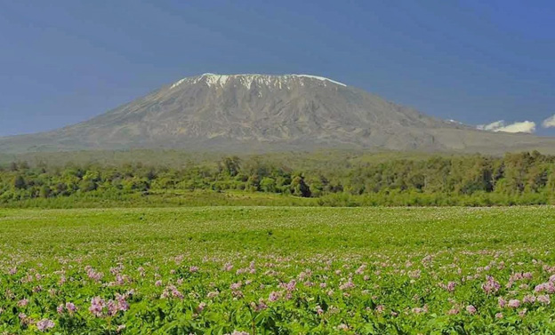

Mountains
A mountain is a landform with the highest altitude above the earth’s surface. The top part of a mountain is called a mountain peak or summit. The peak of a mountain may have snow and ice on it or not. In addition, a mountain has steep slopes. Tanzania has several large and small mountains. For example, the highest mountain in Tanzania is Mount Kilimanjaro, which is located in Kilimanjaro Region. Mount Kilimanjaro has a height of 5,895 meters. The top of Mount Kilimanjaro is covered with ice and snow. This is beacuse, as you go higher, temperature decreases. Mount Kilimanjaro is also the highest mountain in Africa. Figure 3 shows the view of Mount Kilimanjaro.
